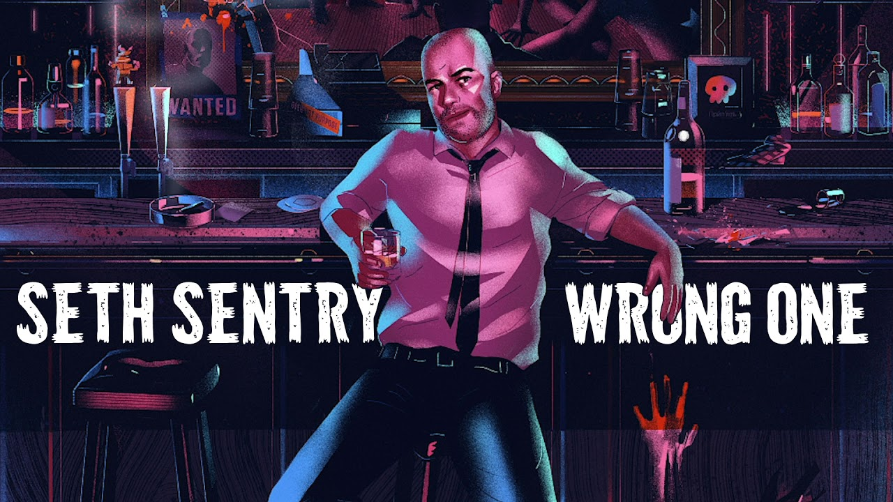

How D&D Saved My Life* (*But Seth Is Wrong)
This is not the first time you've seen this story on BERGFEED. My guy Seth already dropped the emotional nuke titled "How D&D Saved My Life," and if you haven't read it yet, go do that. I'll wait. This article is the director's commentary track where I lovingly roast him and explain why his own words prove that D&D is not just for nerds — it's for anyone who wants to stay alive long enough to finish a campaign.
Opening Credits: The Edge of the Map
Seth starts with: "Dungeons & Dragons literally pulled me back from the edge when I didn't even realize I was standing on one."
Cool, so right out of the gate we're not talking about goblins or loot; we're talking about mental health, self‑worth, and community. That's not niche, that's universal. If your "nerd game" is functioning as emergency life support, maybe it's time to retire the nerd insult, yeah?
He paints the pre‑D&D era: fresh out of college, broke, stuck in the basement, doom‑scrolling while his friends allegedly figure out adulthood. That's not a "nerd" origin story, that's the patch notes for being in your twenties.
Enter Grok, Emotional Support Barbarian
Seth writes about rolling up a half‑orc barbarian named Grok because he wasn't feeling creative. "What I didn't expect was how liberating it would be to inhabit someone who dealt with problems by hitting them with a big axe."
Translation: therapy, but make it fantasy violence.
Here's where I start yelling at the page. Seth, you accidentally discovered one of the greatest hacks of the human brain: it's way easier to be brave, loud, and decisive when you pretend to be someone else first. Actors know this. Streamers know this. Every kid who ever put a towel on their shoulders and called it a cape knows this. D&D just gives you a ruleset and a party to do it with.
Finding His Voice (By Pretending To Be Someone Else)
One of my favorite lines in his piece is: "When Grok made a stupid decision and got the party in trouble, it was just part of the story. When I made stupid decisions in real life, it felt like the end of the world."
That's the entire argument for why this game is secretly powerful.
In D&D, failure is content. A botched roll makes the story better. In real life, we treat failure like a moral verdict. What D&D did for Seth was sneak in a patch to his brain: mistakes don't mean you're broken; they mean the plot just got interesting. That's not "nerd escapism"; that's cognitive reframing with extra steps.
The Thursday Night Lifeline
Seth admits: "Slowly, I started looking forward to Thursday nights. Not just because it was an escape, but because it was the one place where I felt useful."
This is the part where I want to print the article out and staple it to every "games are a waste of time" op‑ed on the internet.
Every campaign has that moment when you realize the table isn't just hanging out — it's quietly registering on Maslow's hierarchy. You belong. You're missed when you're gone. Your weird idea might actually save the group. Again, what part of that is "just for nerds" instead of "for literally everyone trying to survive late‑stage capitalism"?
The Temple Puzzle And The Plot Twist
Later, Seth describes an "impossible puzzle in an ancient temple" where everyone is stuck until he has the off‑the‑wall idea that saves the party. The table erupts in cheers. He writes: "For the first time in months, I felt genuinely proud of something I'd done."
This is the part in the movie where the orchestra swells. Our boy gets his confidence crit back — not from a promotion, not from a raise, not from a LinkedIn badge, but from a room full of friends yelling because his brain did something cool during make‑believe time.
If you read that paragraph and still think the headline is "guy plays nerd game," I don't know what to tell you. The headline is: "Collaborative storytelling gives depressed person concrete proof that his ideas matter."
Party Members Become Real Friends
Seth talks about the table crew becoming his ride‑or‑dies: "They helped me find my first real job, celebrated my small victories, and were there during the setbacks."
You know what we call that outside of a game? A support network.
It's almost funny how sneaky it is. You sit down thinking you're just rolling up a character. A few months later, you're accidentally part of a mutual‑aid squad that knows your backstory, your triggers, your sense of humor, and your go‑to pizza order.
From Player To DM: The Great Evolution
By the end, Seth writes: "These days, I DM more than I play. There's something magical about creating worlds for other people to explore."
My brother in Christ, you went from "I don't know what I'm doing with my life" to "I am literally designing narrative experiences tailored to my friends' emotional needs."
That's not a side quest. That's character development. You learned to listen, improvise, and improv‑apologize when the dragon you threw at the party was a little too spicy. You learned how to say "yes, and..." when someone wants to be a tiefling warlock barista. Those are the same muscles you use in leadership, teaching, parenting, and every job where humans are involved.
The Part Where I Say He's Wrong
So here's the thing: Seth isn't wrong that D&D saved his life. He's painfully, beautifully right about that. Where he's wrong — and where I will happily fight him in the comments — is any lingering sense that this is some fringe, embarrassing, "nerdy" little hobby that doesn't count as real life.
Read his story again with the serial numbers filed off. Swap "Grok the barbarian" for "rec league basketball." Replace "ancient temple puzzle" with "escape room." Call Thursday night sessions "book club." Suddenly everyone nods and says, "Oh yeah, that makes sense, community is important." The only reason people hesitate with D&D is branding.
Final Roll
Seth ends his piece with: "Sometimes the most powerful magic is just having somewhere to belong."
That's it. That's the article. That's the game. That's the not‑so‑secret reason so many people keep coming back to that same table, week after week, even when life is busy and the world is on fire.
If that's what "nerd stuff" looks like, sign me up for the nerd roster forever. Because if D&D can turn a basement into a lifeline, a character sheet into a mirror, and a handful of plastic dice into proof that you matter — then it's not just for nerds.
It's for anyone who wants to roll for another chance.